Giải pháp hệ thống
11. Phát hành tem nhãn
In tem QR cho nguyên vật liệu, thành phẩm và vị trí. Tem QR là chìa khóa của toàn bộ thao tác kho: mỗi tem định danh một pallet.
11.1Phát hành tem nguyên vật liệu
Phát hành tem › Phát hành tem nguyên vật liệu
11.2Phát hành tem thành phẩm / bán thành phẩm
Phát hành nhãn › Phát hành tem thành phẩm / bán thành phẩm
11.3Tách tem
Phát hành tem › Tách / gộp tem › Tách tem · Ứng dụng PDA › Quản lý hàng hóa › Tách / gộp tem › Tách tem
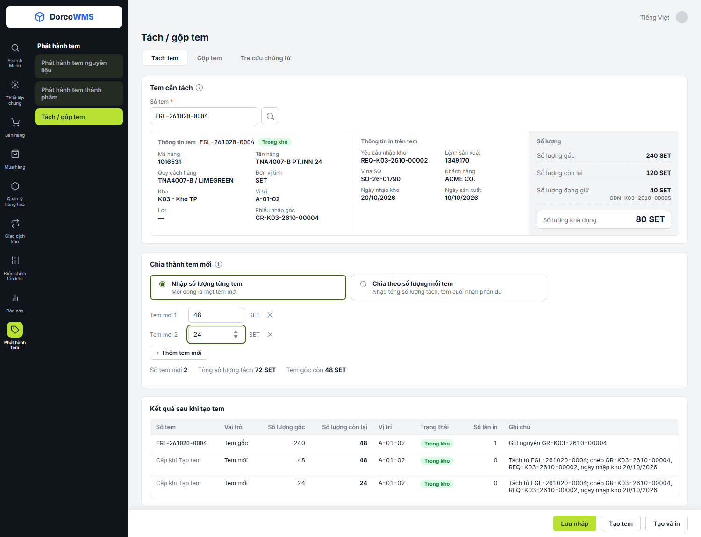
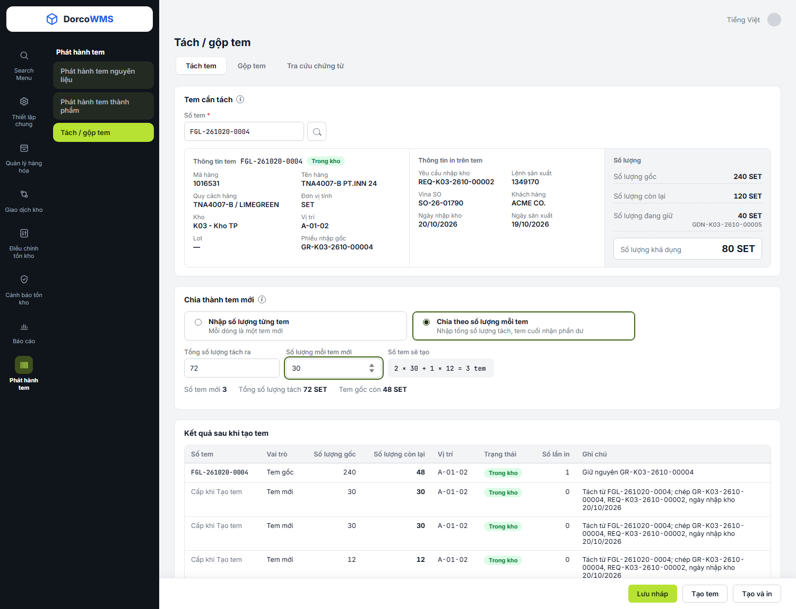
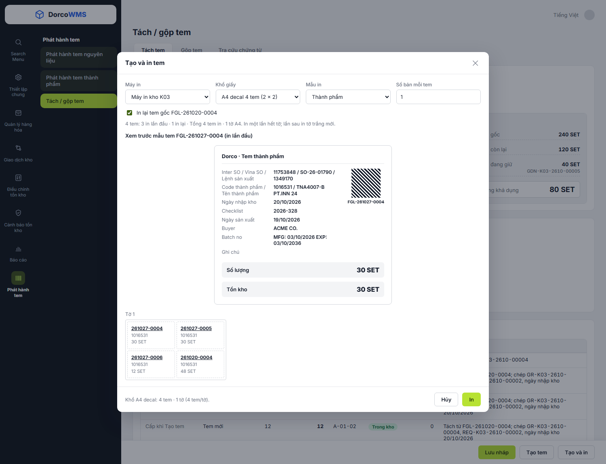
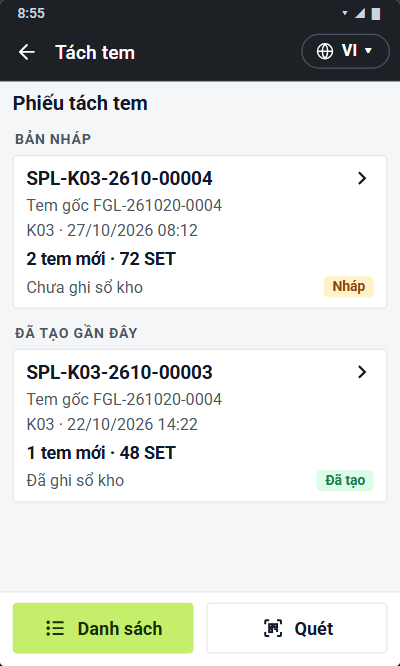
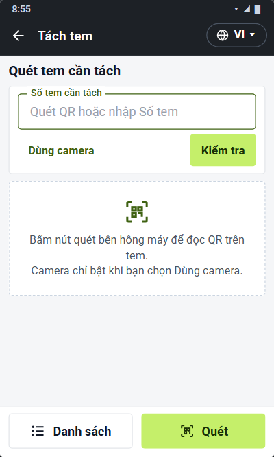
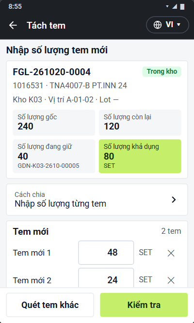
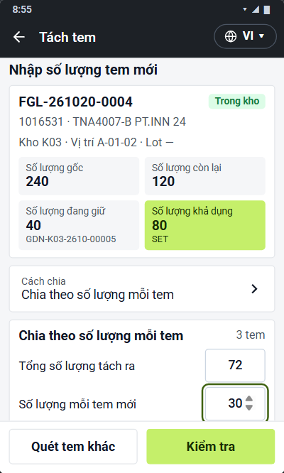
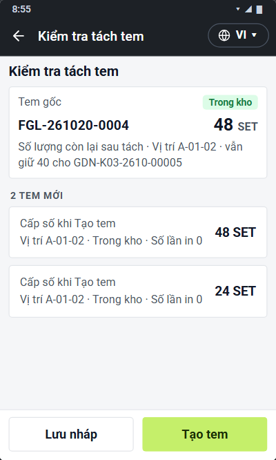
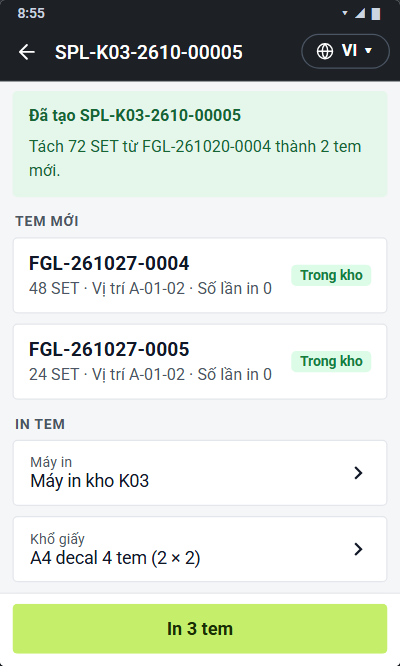
11.4Gộp tem
Phát hành tem › Tách / gộp tem › Gộp tem · Ứng dụng PDA › Quản lý hàng hóa › Tách / gộp tem › Gộp tem
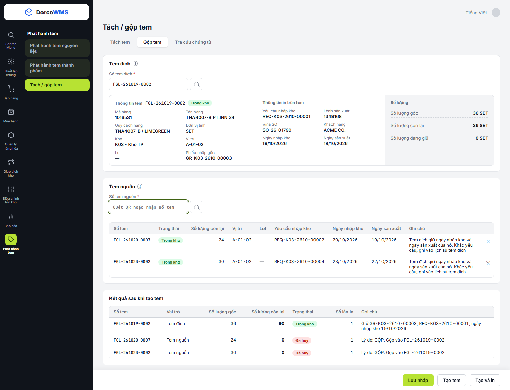
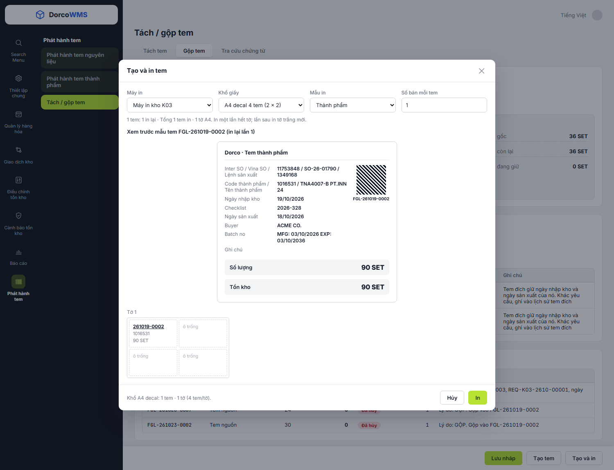
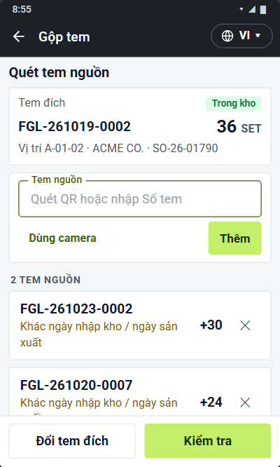
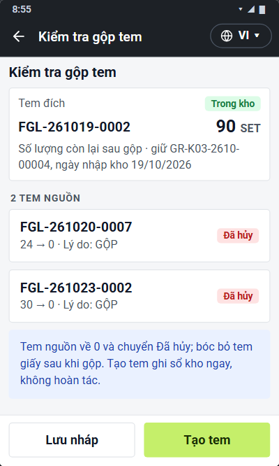
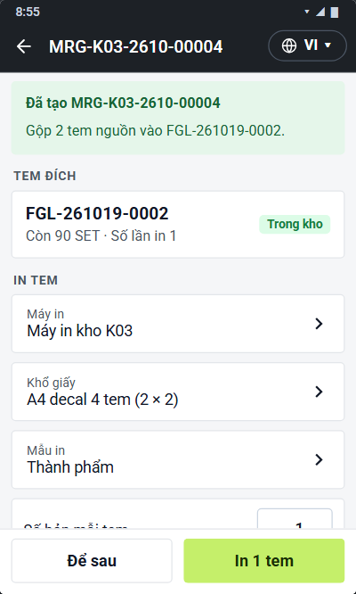
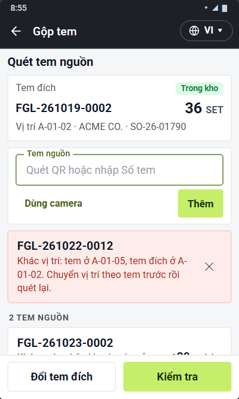